Trusted Software Supply Chain with Other CIs
Red Hat’s customers have varied requirements, including the need to integrate third party continuous integration (CI) systems with OpenShift, Red Hat Developer Hub, and Trusted Software Supply Chain (TSSC). Not all customers are ready to replace their existing CI with cloud-native CI based on OpenShift Pipelines (Tekton).
Given Jenkins' immense presence within enterprise environments, in this module we’ll review an example that demonstrates how to implement TSSC using Jenkins as the CI provider. The scripts and implementation seen throughout this module can be adapted to alternative providers such as GitHub Actions, Azure DevOps and GitLab CI - plugins are also available for these platforms to connect to Red Hat Developer Hub.
It makes sense to take this approach for:
-
Organizations with Jenkins investments wanting to modernize without replacement
-
Enterprise teams with established Jenkins expertise and infrastructure
-
Platform engineers enhancing existing CI/CD capabilities
-
Organizations balancing innovation with investment protection
Upon completion of this module you’ll understand how to:
-
Provide modern Jenkins workflows using self-service software templates
-
Integrate enterprise security into existing Jenkins pipelines
-
Enhance Jenkins pipelines with automatic security scanning and signing
-
Understand GitOps deployment from Jenkins-based CI/CD
Jenkins Environment
A Jenkins instance has been pre-deployed on your OpenShift Cluster - you can find it in the {openshift_console_url}/topology/ns/jenkins[jenkins namespace^].
This is an example Jenkins instance with a minimal security configuration and is not intended as a production configuration. For example, you can view the Jenkins UI without authentication.
Verify that the necessary credentials and TSSC component endpoints have been configured in Jenkins:
-
Open the Jenkins dashboard.
-
Click login in the top-right, and login using:
-
Username:
admin -
Password:
{rhdh_user_password}
-
-
Expand the Jenkins Admin menu and select Credentials.
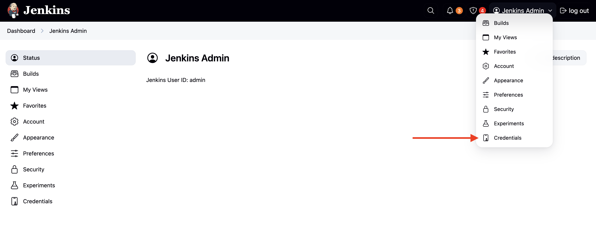 -
Verify that the listed credentials match those shown.
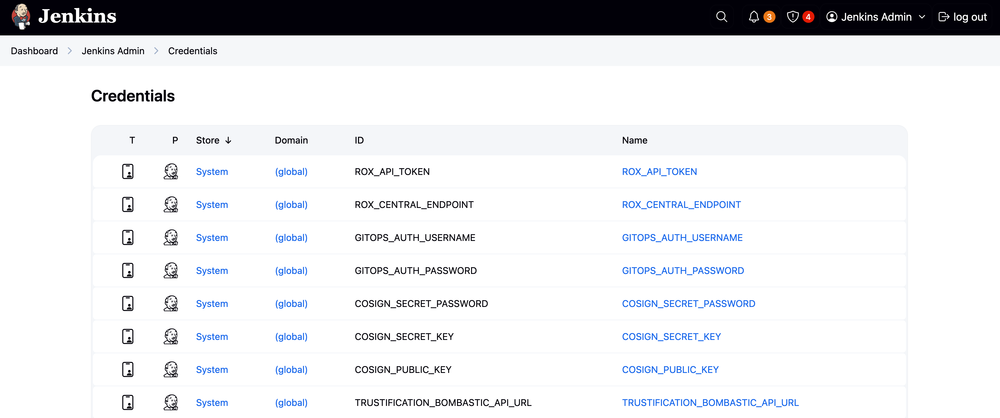
These credentials will be used in your pipeline to verify commit signatures, sign builds, and more.
Configure Jenkins Plugins for Red Hat Developer Hub
As thoughtful platform engineers, we want to streamline our developer workflows. To that end, we’re going to integrate Jenkins with our Internal Developer Portal based on Red Hat Developer Hub. Doing so means that the developer can view CI pipeline(s) and their status for software components directly in the Red Hat Developer Hub software catalog - no bookmark hell required.
The majority of integrations between Red Hat Developer Hub and external systems require plugins. We’ve setup the plugins ahead of time, but let’s review their configuration - this is so you can understand the work required by a platform engineer to configure them.
| The Jenkins plugins are in Technology Preview as of Red Hat Developer Hub v1.7. Detailed plugin information can be found in the Jenkins plugin README. |
-
View the {openshift_console_url}/k8s/ns/tssc-dh/configmaps/tssc-developer-hub-dynamic-plugins[tssc-developer-hub-dynamic-plugins ConfigMap^]. Login as
{openshift_admin_user}using the password{openshift_admin_password}if prompted. -
Scroll down until you find two plugins:
-
backstage-community-plugin-jenkins
-
backstage-community-plugin-jenkins-backend-dynamic
-
The backstage-community-plugin-jenkins has a pluginConfig defined. This is a special directive used by Red Hat Developer Hub’s dynamic plugin functionality. In this case, it’s being used to mount the Jenkins React component as a pane (or card) in the CI section for an entity in the Catalog.
In the case of backstage-community-plugin-jenkins-backend-dynamic, the configuration is found elsewhere:
-
View the {openshift_console_url}/k8s/ns/tssc-dh/configmaps/tssc-developer-hub-app-config[tssc-developer-hub-app-config ConfigMap^].
-
Scroll down. You’ll see that it specifies a single instance under the
jenkinsconfiguration key. Application CI status information will be fetched from this instance if, and only if, the Backstage entity has thejenkins.io/job-full-nameannotation. -
The parameters passed in the format
${VARIABLE_NAME}are defined in the {openshift_console_url}/k8s/ns/tssc-dh/secrets/tssc-developer-hub-env[tssc-developer-hub-env Secret^] that’s loaded per the {openshift_console_url}/k8s/ns/tssc-dh/rhdh.redhat.com~v1alpha3~Backstage/developer-hub/yaml[Backstage CR definition^].
|
If you’d like a deep-dive on plugins and the Backstage CR, visit the Setup Red Hat Developer Hub module. |
Integrating Secure Software Supply Chain in Jenkins CI
Creating a new Software Template and related skeleton code from scratch is beyond the scope of this module; instead we’ll review a template provided by Trusted Software Supply Chain and use it to test the Jenkins CI integration with Red Hat Developer Hub.
Viewing the Software Template
The template is already loaded into your environment. Find it and view the backing source code:
-
View the Template in the {rhdh_url}/create?filters%5Bkind%5D=template&filters%5Btext%5D=jenkins&filters%5Buser%5D=all&limit=20[Red Hat Developer Hub Self-Service screen^]. If needed, login as
{rhdh_user}using the password{rhdh_user_password}. -
Click on the Show template entity details icon.
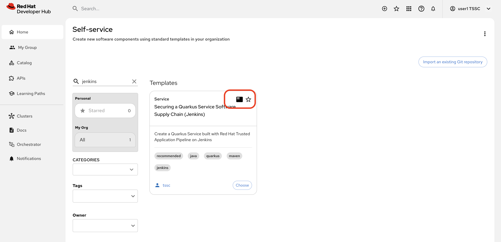 -
Click the View Source link on the template entity’s overview screen.
You’ll be directed to a repository that contains the
template.yamlthat defines the parameters collected, and actions performed by the template. Additionally it contains askeletondirectory with source files that will be used to generate a new application when a developer uses the template in Red Hat Developer Hub.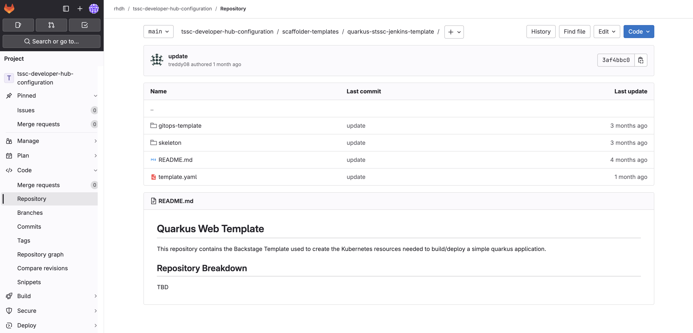To learn more about Software Templates and their implementation, visit the Setup Red Hat Developer Hub and End-to-End: Production-Ready Development Lifecycle modules.
In summary, this template.yaml defines a Software Template that collects parameters to scaffold a new Quarkus-based Java application that stores source code in GitLab and built container images in Quay. Additionally it has a toggle to enable commit signing, an element of a secure software pipeline.
Inspect the Jenkins Push Pipeline
-
In GitLab, open the
skeletondirectory, and select theJenkinsfile.pushfile.This file defines the actions taken by the secure software pipeline when a developer pushes commits to applications created using this template. Notably, this Jenkinsfile defines an execution environment using a container that’s run on OpenShift (
agent > kubernetes).The specified image,
quay.io/jkopriva/rhtap-jenkins-agent, includes binaries and other dependencies required to for the secure software supply chain. Additionally, the Jenkinsfile loads a reusable wrapper library from {gitlab_url}/rhdh/tssc-sample-jenkins[rhdh/tssc-sample-jenkins on GitLab^] that uses those dependencies to implement specific elements of the pipeline. For example, the {gitlab_url}/rhdh/tssc-sample-jenkins/-/blob/main/resources/buildah-rhtap.sh[buildah-rhtap.sh script] creates a builds container image and generates the SBOM. -
Scroll down to the
environmentblock. Did you notice that it references the credentials you viewed earlier in the Jenkins Admin UI? -
Examine the
mvn packagestage. Looks pretty standard right? -
Scroll down a little more and you’ll see that the
initandbuildstages use the shared rhtap functions to implement aspects of the secure pipeline.
There are a total of three Jenkinsfiles in this template repository, each with a different purpose:
-
Jenkinsfile.push: Triggered on Code Commits: Activates when you commit and push code changes to your repository. Runs development pipeline with build, test, and security scanning. Performs continuous integration validation for development workflow. -
Jenkinsfile.tag: Triggered on Git Tags: Activates when you create a Git tag on a branch in your repository. Runs staging pipeline for release candidate validation. Prepares artifacts for staging environment deployment. -
Jenkinsfile.release- Triggered on GitLab Releases: Activates when you create a release from an existing tag. Runs production pipeline with enhanced security validation. Deploys verified artifacts to production environment.
Each pipeline includes comprehensive security features: cryptographic commit verification and image signing, Enterprise Contract policy enforcement, Software Bill of Materials (SBOM) generation, and Red Hat Advanced Cluster Security scanning.
Modify the Jenkinsfile
Let’s make a minor edit to the Jenkinsfile.push to see how it impacts the overall software template. This action would typically be performed by a Platform Engineer.
-
Open the {gitlab_url}/rhdh/tssc-developer-hub-configuration/-/blob/main/scaffolder-templates/quarkus-stssc-jenkins-template/skeleton/Jenkinsfile.push[Jenkinsfile.push^] file.
-
Click Edit > Edit single file at the top of the file. Login as
rootusing the password{gitlab_user_password}if prompted. -
Modify the file by adding a new stage with a single step directly between the the
verify-commitandmvn packagestages:stage('print commit details') { steps { // Print the committer and timestamp of the commit in the build logs sh 'git log -1 --pretty=format:"By %ae on %ad"' } }The end result will resemble this image.
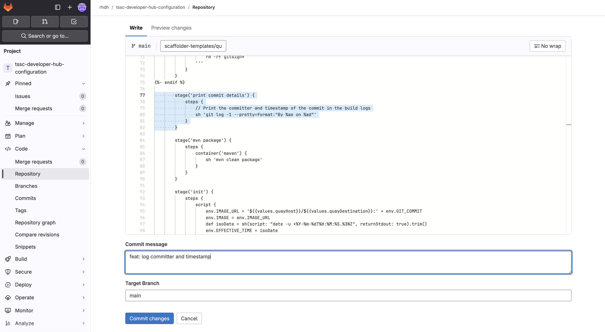
-
Commit the changes by clicking the Commit changes button.
Create Signed Commits and Verify the Jenkins Pipeline
Use your Jenkins-based Software Template
-
Return to the {rhdh_url}/create[Red Hat Developer Hub Self-service UI^]. If needed, login as
{rhdh_user}using the password{rhdh_user_password}. -
Click Choose on the Securing a Quarkus Service Software Supply Chain (Jenkins) tile.
-
On the Provide Information for Application, change the Name to:
ssc-jenkins-sampleAnd click Next.
-
Accept the default values on the Provide Image Registry Information screen. Click Next.
-
Enable commit verification on the Application repository Information screen. Click Review.
-
Confirm that your parameters match those displayed in the following image.
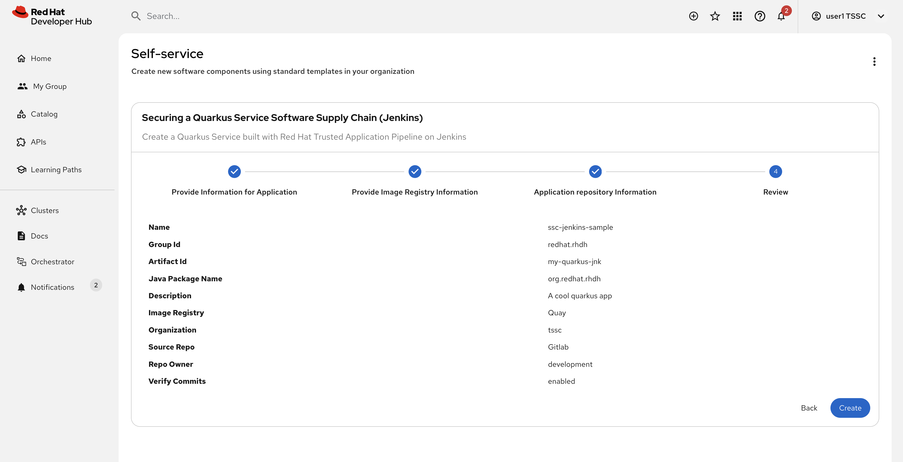
-
Click Create and wait for the template to finish processing.
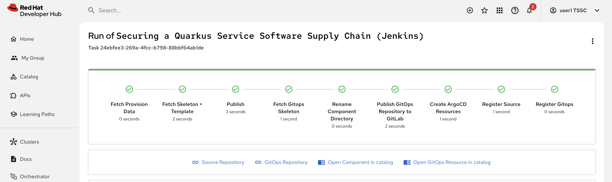
Test & Verify the Secure Jenkins Pipeline
Prior to following these steps, make sure you’re not signed into the OpenShift Cluster as the admin user. Visit the {openshift_console_url}[OpenShift Web Console^], click the dropdown in the top-right to logout. This may cause you to also be logged out of Red Hat Developer Hub. If so, log back in as {rhdh_user} using the password {rhdh_user_password} when needed.
|
-
Click the {rhdh_url}/catalog/default/component/ssc-jenkins-sample[Open Component in catalog^] link (or visit the Catalog in Red Hat Developer Hub and select your new ssc-jenkins-sample component).
-
Use the link on the overview to launch OpenShift Dev Spaces (VS Code):
-
This will start a process that launches a Cloud Development Environment (CDE).
-
If prompted login as
{rhdh_user}using the password{rhdh_user_password}. -
Click Continue when prompted for Do you trust the authors of this repository?
-
Authorize the GitLab login too, being sure to use
{gitlab_user}and{gitlab_user_password}if prompted. -
Wait for the workspace to load.
-
-
Once the workspace is loaded, accept the popups asking to trust and load plugins and publishers.
-
Click on the README.md file and make a small change, then use the menu icon in the top-left to launch a terminal as shown.
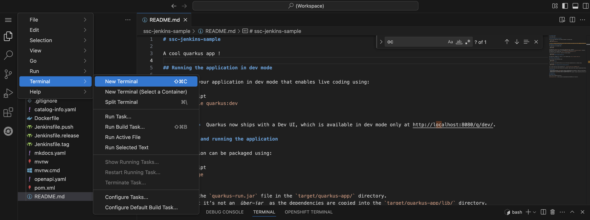
-
In the terminal run the following commands to set your Git identity and commit your change:
git config --global user.name "{gitlab_user}" git config --global user.email "{gitlab_user}@demo.redhat.com" git add . git commit -m "doc: update the readme" -
You’ll be prompted to follow a link to obtain a verification code to sign the commit. Click the link, and copy the code it displays to your clipboard (CTRL-C or CMD-C on macOS).
-
Return to the terminal in Dev Spaces and paste the code into the terminal using (CTRL-V or CMD-V on macOS).
If your browser requests access to copy/paste functionality make sure to click allow. -
Press [ENTER or RETURN] to sign the commit.
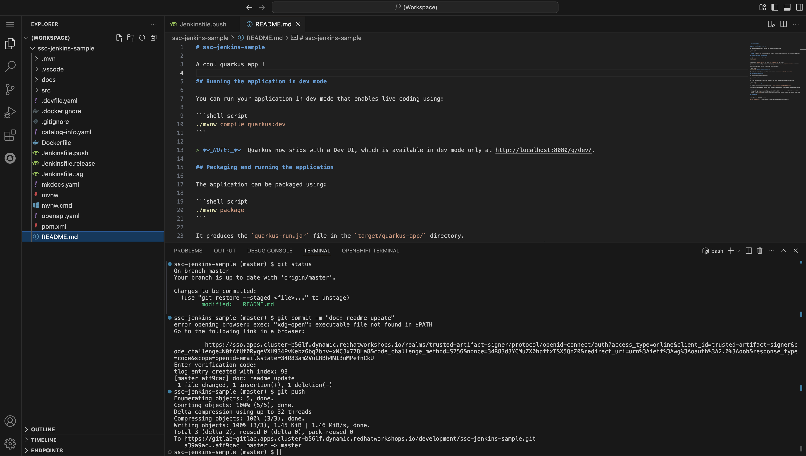
-
Push the commit using the
git pushcommand. This will trigger the Jenkins pipeline.
Inspect the Jenkins Build
Time to verify that your platform engineering efforts are reflected in the resulting builds. To do this you’ll view the build output directly in Jenkins.
-
Return to the {rhdh_url}/catalog/default/component/ssc-jenkins-sample/ci[CI tab for your ssc-jenkins-sample application^] in Red Hat Developer Hub.
-
A new maven-build-ci should be in progress. Click the View build (eye) icon.
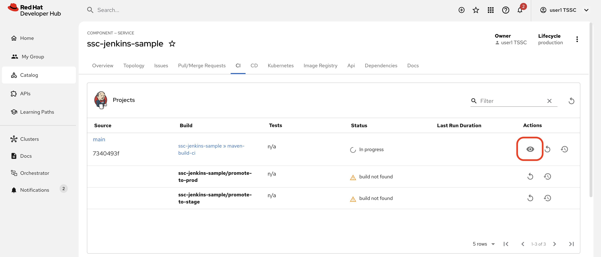
-
Click the Open Blue Ocean link in the Jenkins UI - this displays a visual representation of each step of the build.
-
Select the print-commit-details node, and then click the arrow next to the displayed command to view the output.
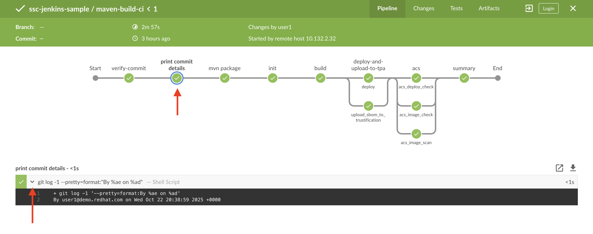
And just like that, you’ve learned how to modify and use the Jenkins-based secure software supply chain template so all developers can benefit from it.
Conclusion
Nice work! You’ve learned how other CI systems can be integrated with Red Hat Developer Hub and Trusted Software Supply Chain. The {gitlab_url}/rhdh/tssc-sample-jenkins/-/tree/main/resources?ref_type=heads[scripts in the Jenkins module^] are portable to environments such as GitLab CI and GitHub Actions. Try {gitlab_url}/development/ssc-jenkins-sample/-/tags[creating a new tag^] for your application and observing the tag promotion pipeline in action on your {rhdh_url}/catalog/default/component/ssc-jenkins-sample/ci[component’s CI tab^] in Red Hat Developer Hub (you can also click the "Eye" icon next to the pipeline run and select the Blue Ocean tab to view the build output in Jenkins).